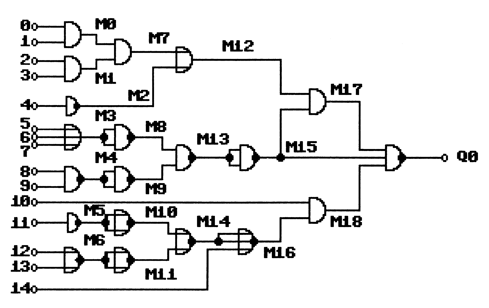
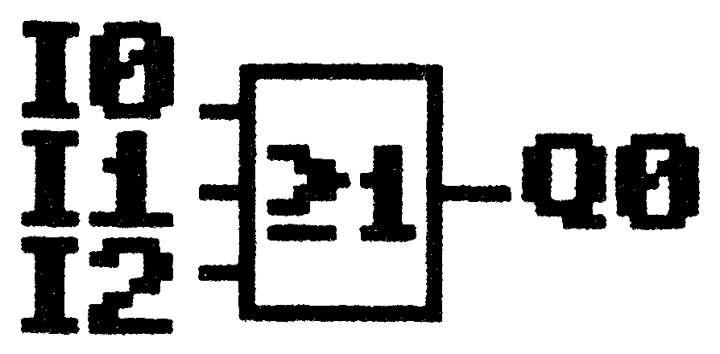
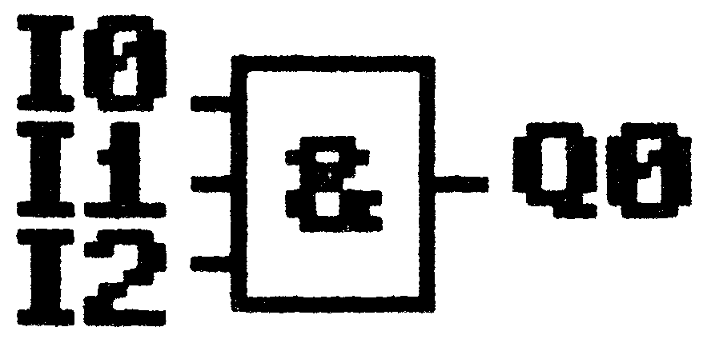
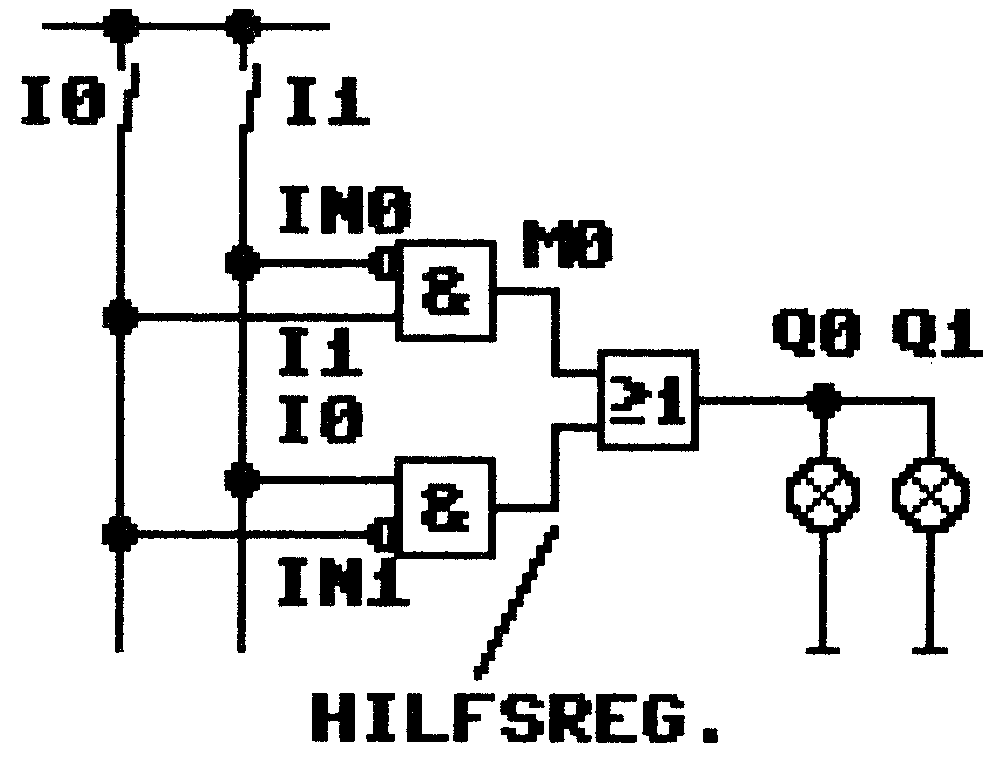

Digi-Controller
Fehlersuche in Gatterschaltungen und Simulation von Digitalschaltungen. Mittels eines Testlaufes, der die Wahrheitstabelle durchprüft, kann dieses Programm funktionale Schwächen frühzeitig entdecken. Außerdem läßt sich dieses Programm zu Lernzwecken bei angehenden Digitaltechnikern einsetzen.
Durch fortschreitende Automatisierungstechnik werden immer größere Anforderungen an elektronische Steuerungen gestellt. Ein immer häufiger auftretendes Schlagwort ist in der Elektronikbranche zu vernehmen: »Digitale Steuerungstechnik« Dieser Beitrag wird Sie schrittweise in die modernen Automatisierungstechniken der Gegenwart einführen.
Zur Simulation und praxisgerechten Anwendung wurde das Programm »Digi-Controller« geschrieben, das der Grundversion einer speicherprogrammierbaren Steuerung (abgekürzt: SPS) entspricht. Dieser Begriff sagt schon sehr viel über die Funktionsweise moderner Steuerungsanlagen aus. In der Regel sind diese Steuerungen computerunterstützt.
Zunächst haben Sie sich sicher schon gefragt, wie Sie diese Technik im Hobbybereich einsetzen können. Zuerst sind einmal alle Modelleisenbahner angesprochen, die sich einen automatischen Ablauf ihrer Bahnsteuerung zwar vorstellen können, jedoch die Hardware-Kosten bei einem fehlerhaften Aufbau scheuen. Als nächstes können alle Einsteiger in die Digitaltechnik aufhorchen, die die mühsamen Hardware-Aufbauten von Digitallabors verschmähen. Ja sogar für den Profi-Anwender sei auf das Austesten von Änweisungslisten nach DIN 19239 SPS verwiesen, da das Programm alle Eingaben (Inputs), Merker (Marker) und Ausgaben (Outputs) zu Papier bringt.
Alle 64 Inputs sind voreinstellbar oder Input 0 bis 7 werden im Dualzahlensystem automatisch hochgezählt, das Programm nach der Anweisungsliste (AWL) abgearbeitet und die digitalen Zustände ausgedruckt. Es kann auch ein TRACH-Lauf der eingegebenen Schaltung simuliert werden. Maximal angesprochen werden können 64 Inputs, 64 Outputs und 64 Marker bei 512 Programmschritten.
Bild 1 zeigt Ihnen eine komplexe Schaltung, deren Funktion Sie anhand des Digi-Controllers durchspielen sollen. Die Schaltung soll als Ausgang eine 0 liefern. Versuchen Sie, die mögliche Kombination der Eingänge herauszufinden und auszutesten (die richtige Lösung finden Sie im Listing-Teil). Probieren Sie es doch einmal aus!

Simulieren und Austesten digitaler Schaltungen und speicherprogrammierbarer Steuerungen ohne unnötigen und teueren Hardwareaufwand — Dieses Programm erledigt das für Sie.
Jeder Bastler, Digitaltechniker oder Informatikstudent kennt das Problem: Man hat nach mühevollem Überlegen eine digitale Schaltung, etwa für eine Ampel-Tipptastensteuerung, entwickelt und muß nun diese Schaltung auf ihre Funktion testen. Hierzu überprüft man den Aufbau mit einer Wahrheitstabelle. Dies bedeutet, daß an die Eingänge verschiedene Bitkombinationen angelegt und die Zustände aller Gatter biszum Ausgang aufihre Pegel getestet werden. Haben Sie nun eine Schaltung mit vielen Eingängen und Gattern, so können Sie sich bestimmt vorstellen, wieviele Bitwerte da auftauchen. In dem Beispiel auf Seite 50 existieren 15 Eingänge, 20 Gatter und ein Ausgang. Das bedeutet, daß an den Eingängen 215 (32768) verschiedene Bibkombinationen anliegen können. In einer Wahrheitstabelle würde dies 15 Spalten bedeuten. Per Hand dürften Sie sicher einige Zeit dafür benötigen, doch wozu gibt es schließlich Computer?
Das Programm »Digi-Controller« (Listing 1) eignet sich zur Simulation und Fehlersuche in Digitalschaltungen. Die Wahrheitstabelle kann sowohl von komplexen Digitalschaltungsentwürfen als auch von Steueranweisungen speicherprogrammierbarer Steuerungen (SPS) erstellt werden. Der Anwendungsbereich reicht vom Hobby-Anwender, der eine Eisenbahnsteuerung entwirft, bis zum Profi, der Programmteile von SPS austestet (der Autor benutzt das Programm zur Kontrolle selbst entwickelter Prüfgeräte für betriebliche Zwecke).
Nach DIN-Norm 19239 sind mit Ausnahme der Timerfunktion alle Anweisungen zur Erstellung einer Anweisungsliste (AWL) enthalten. Jedoch besteht die Möglichkeit, durch Programmierung anstelle eines Timers einen Input-Befehl zu wählen. Der jeweilige Zeitablauf kann somit simuliert werden (es ist bestimmt nicht sinnvoll, während einer Simulation auf einen Timerablauf von zum Beispiel 30 Minuten zu warten). Das Programm ist mit einem Standard-Compiler übersetzbar, was die Verarbeitungsgeschwindigkeit des Programms merklich erhöht (auf der Programmservice-Diskette ist selbstverständlich auch eine compilierte Version enthalten).
Doch vor der eigentlichen Bedienungsanleitung noch einige Begriffserklärungen:
Speicherprogrammierbare Steuerung — Elektronik-Steuerteil (Hardware)
Anweisungsliste (AWL) — Programm einer SPS (Software)
Eingänge einer SPS (Inputs) — Signalgeber (zum Beispiel Schalter)
Merker einer SPS (Marker) — Zwischenspeicher digitaler Ergebnisse
Ausgänge einer SPS (Outputs) — 2 (zum Beispiel Lampen)
Binärstelle — ein Bit (Inhalt: 0 oder 1)
Für den Einsteiger in die Digitaltechnik soll hier noch die Definition binärer Signale aufgezeigt werden:
Spannung vorhanden — keine Spannung vorhanden
Stromkreis geschlossen — Stromkreis geöffnet
Schalter eingeschaltet — Schalter ausgeschaltet
High-(oder 1-)Pegel — Low-(oder 0-)Pegel
Ordnet man diesen Zuständen Signale zu, so spricht man von binären (zweiwertigen) Signalen.
Die binäre Größe High/Low-Potential (abgekürzt H/L-Pegel) bedeutet, daß das elektrische Potential hoch (H, zum Beispiel +5V) oder niedrig (L, zum Beispiel OV) sein kann. Zu deren Darstellung können die binären Ziffern 0 und 1 herangezogen und als Signale bezeichnet werden. Eine binäre Stelle wird auch als »Bit« bezeichnet. Aus den binären Signalen läßt sich ein Dezimal-Dual-Zahlensystem aufbauen.
Wer sich intensiver mit dem Dualzahlensystem und dessen Anwendung beschäftigen möchte, der sei auf die überaus zahlreiche Literatur zu diesem Thema verwiesen.
Bevor es mit den Befehlen zur Erstellung einer Anweisungsliste losgeht, soll noch auf den Hardware-Aufwand für den Digi-Controller hingewiesen werden. Das Programm ist lauffähig auf einem C 64 mit Floppy 1541 und einem Epson RX/FX-80 mit Data-Becker-Interface. Andere Drucker sind über Änderung der Sekundäradresse im OPEN- und PRINT #-Befehl anpassungsfähig.
Programmbeschreibung
Für die Anweisungslisten (AWL,), die in den modernen SPS verschlüsselt abgelegt sind und mit denen auch der Digi-Controller arbeitet, gilt die DIN-Norm 19239. Hier sind den Operationen und Operanden anwenderspezifische Kurzzeichen in englisch und deutsch zugeordnet. Es werden folgende Abkürzungen verwendet:
Für die Operationen:
| O | OR | ODER-Verknüpfung |
| A | AND | UND-Verknüpfung |
| X | XOR | EXKLUSIV-ODER-Verknüpfung |
| = | ASSIGNMENT | ZUWEISUNG |
| J | JUMP | absolute Sprunganweisung |
| JI | JUMP IF | indirekte Sprunganweisung |
| ; | Kommentarzeile |
und für die Operanden:
| I | INPUT | Eingang |
| M | MARKER | Merker |
| Q | OUTPUT | Ausgang |
| N | NOT | Negation |
Aufbau einer Anweisungsliste (AWL)
Die Anweisungsliste besteht im allgemeinen aus Anweisungs- und Kommentarzeilen.
Zeilennummer / Operation / Operand / Parameter / Kommentar
3stellig / 1stellig / 2stellig / 3stellig / 2lstellig
Die Zeilennummer kann mittels Eingabe von Ziffern oder durch die Cursor-Tasten eingestellt werden. Der Zeilennummernbereich umfaßt 512 Zeilen. Die Zeilen werden vom Compiler in aufsteigender Reihenfolge abgearbeitet. Ausnahme: Absolute oder indirekte Sprungbefehle.
Die Operation »;« kennzeichnet eine Kommentarzeile. Die Operatoren »O«, »A« und »X« stellen eine logische Verknüpfung zwischen Inputs, Markern und Outputs dar. Das »=« Zeichen weist das Ergebnis einer logischen Operation einem Marker oder Outputzu.»J«kennzeichneteinen Sprungbefehl.
Der Operand definiert Input, Marker oder Output. Durch hinzufügen eines»N«-Zeichens kann der Operand negiert (invertiert) werden. Wurde als Operation ein »J«Sprungbefehl definiert, so kann durch Angabe eines »I«-Zeichens im Operanden ein indirekter Sprungbefehl festgelegt werden.
Der Parameter legt die Nummer eines Inputs, Markers oder Outputs fest. Bei Sprungbefehlen wird hier die Zieladresse der nächsten Zeilennummer festgelegt.
Zulässige Eingabewerte:
0 bis 64 — Input, Marker, Output
0 bis 512 — absolute Sprungadresse (Jump)
0 bis 512 — indirekte Sprungadresse (Jump if)
Der Kommentar dient der Programmdokumentation.
Bevor wir nun in die Programmierung eigener AWL einsteigen, hier noch eine detaillierte Beschreibung des Controllers. Vom Hauptmenü aus sind aufzurufen:
- Anweisungsprogramme löschen: Das zuletzt gelistete Programm (AWL) kann mittelsder <F1>-Taste gelöscht werden. Anzeige des nächsten Programms mit <F5>, Rückkehr ins Hauptmenü mittels <F7>.
- Anweisungsliste von Disk lesen: Die Datendiskette mit den gespeicherten AWL kann auch die Programmdiskette des Controllers sein. Diskettenfehler werden ausgegeben. Inder Directory-Übersicht kann durch Drücken von:
<F1> das zuletzt angezeigte AWL geladen;
<F5> die nächste AWL angezeigt und
<F7> in das Hauptmenü gesprungen werden. - Anweisungsliste erstellen: Das ist nun die Eingabeebene, von der aus die Anweisungs- und Kommentarzeilen erstellt und geändert werden. Die Eingaben sind jeweils mit <RETURN> zu quittieren. Unterhalb der Kopfzeile werden die Auswahlmöglichkeiten angezeigt. Um eine größere Programmübersicht zu erhalten, drücken Sie bitte <Fl>. Mit <F7> gelangen Sie in ein Untermenü, wobei Sie nun zwischen dem Rücksprung ins Hauptmenü oder Speichern der AWL wählen können. Es ist sinnvoll, die AWL gelegentlich zu speichern.
- Anweisungsliste ausdrucken: Der Ausdruck kann auf Bildschirm oder Drucker gelenkt werden. Es ist auch möglich, die AWL nur teilweise auszugeben.
- Auswertung von AWL ausdrucken (Wahrheitstabelle): Mittels der TRACE-Funktion werden die abgearbeiteten Zeilennummern der AWL angezeigt (Compilerlauf). Hierbei erkennt das Programm Endlosschleifen der AWL (bei »J«-Befehlen).
Bei der Einzelauswertung können anfangs alle Bit-Kombinationen der einzelnen Inputs mit »0«, »l«oder einem Leerzeichen belegt werden. Spricht das Programm einen Input an, der mit einem Leerzeichen belegt ist, so wird der Inhalt des Inputs wie eine logische Null (0) behandelt. Im Ausdruck wird der Inhalt des Inputs ebenfalls mit einem Leerzeichen ausgegeben.
Wählen Sie die Gesamtauswertung, so wird zunächst der höchste Inputparameter (maximal Input 7) der AWL ermittelt. Das bedeutet: wurde zum Beispiel Input 0 bis 3in der AWL angesprochen, so generiert das Programm 2° = 16 Programmdurchläufe. Dabei setzt der Digi-Controller alle möglichen Bit-Zustände von Input O bis 3 automatisch. Diese arbeitet der Compiler ab und druckt sie aus (bei diesem Beispiel reichen die Bit-Zustände von 0000 bis 1111). Falls Zuweisungen an Marker oder Outputs übergeben wurden, so druckt das Programm auch diese Werte aus.
Umsetzen digitaler Schaltungen in eine AWL
Die Anzahl der Inputs aller logischen Schaltungen muß nicht drei sein, sondern kann je nach Bedarf bis 64 betragen (in unserem Beispiel auf Seite 50 existieren 15 Eingänge). Wichtig bei der Erstellung einer AWL ist:
Immer bei einer neuen AWL oder nach jeder Zuweisung (»=«) mit einer ODER-Anweisung als Operation beginnen. Zuerst muß ein internes Hilfsregister mit dem Inhalt eines Inputs (Bit = 1 oder 0) geladen werden. Dies ist nur mit der ODER-Anweisung möglich. Da das Hilfsregister nach jeder Zuweisung mit »=« gelöscht wird, ist es ebenfalls notwendig, das Hilfsregister mittels einer ODER-Anweisung zu laden.
Das Ergebnis einer logischen Verknüpfung ergibt sich aus dem Vergleich eines Inhalts von einem Input, Marker oder Output mit dem Inhalt des Hilfsregisters und wird im Hilfsregister abgelegt.
Die ODER-Schaltung (Bild 1)
Merksatz: Der Output Q0 führt H-Pegel, wenn mindestens an einem Input (IO bis I2) ein H-Pegel anliegt.

AWL:
0 ; \*OR-Verknüpfung mit 3 Inputs 1 0 I0 \*Hilfsregister mit Inhalt von I0 laden 2 0 I1 \*Inhalt Input I1 mit Inhalt Hilfsregister verknüpfen 3 0 I2 \*Inhalt Input I2 mit Inhalt Hilfsregister verknüpfen 4 ; \*Ergebnis der Verknüpfung steht im Hilfsregister 5 = Q0 \*Inhalt Hilfsregister Output Q0 zuweisen
Bitte geben Sie diese Anweisungszeilen im Digi-Controller ein. Sie können nun die AWL ausdrucken und auf Richtigkeit überprüfen. Das Ergebnis Ihrer Arbeit können Sie als Auswertung (Gesamtausdruck) ausgeben lassen.
Die UND-Schaltung (Bild 2)
Merksatz: Der Output Q0 führt nur dann einen H-Pegel, wenn alle Inputs (IO bis I2) einen H-Pegel führen.

AWL:
0 ; \*AND-Verknüpfung mit 3 Inputs 1 0 I0 \*Hilfsregister mit Inhalt von Input I0 laden 2 A I1 \*Inhalt Input I1 mit Inhalt Hilfsregister verknüpfen 3 A I2 \*Inhalt Input I2 mit Inhalt Hilfsregister verknüpfen 4 ; \*Ergebnis der Verknüpfung steht im Hilfsregister 5 = Q0 \*Inhalt Hilfsregister Output Q0 zuweisen
Die EXCLUSIV-ODER-Schaltung (Bild 3)
Merksatz: Der Output 00 führt nur dann einen H-Pegel, wenn an genau einem Input (IO/II) ein H-Pegel anliegt. Führt mehr als ein Input einen H-Pegel oder liegen alle Inputs auf L-Pegel, so steht am Ausgang Q0 ein L-Pegel.
AWL:
0; \*XOR-Schaltung mit zwei Inputs 1 0 I0 \*Hilfsregister mit Inhalt von Input IO laden 2 X I1 \*Inhalt Hilfsregister mit Inhalt Input I1 verknüpfen 3 ; \*Ergebnis steht im Hilfsregister 4 = Q0 \*Inhalt Hilfsregister Output Q0 zuweisen
Die NICHT-Schaltung (Bild 4)
Merksatz: Der Output 00 führt immer den umgekehrten Pegel des Inputs I0.
AWL
0 ; *NICHT-Verknüpfung am Output
1 0 IN1 *Inhalt Input Il invertiert in Hilfsregister laden
2 = Q1 *Inhalt Hilfsregister Output Q1 zuweisen
Sprung-Befehle
Zum Einfügen und Austesten von Programmteilen können Sprungbefehle in der AWL programmiert werden. — Der JUMP-Befehl: Gibt im Parameter die nächste Zeilennummer an, die vom Compiler abgearbeitet werden soll. Damit ist es zum Beispiel möglich, aus dem Hauptprogramm an das Programmende zu springen, eingefügte Programmzeilen abzuarbeiten und wieder ins Hauptprogramm zurückzuspringen.
- Der JUMP IF-Befehl: Gibt im Parameter ebenfalls die nächste Zeilennummer an, die vom Compiler abgearbeitet werden soll. Jedoch wird der indirekte Sprungbefehl nur dann ausgeführt, wenn das Ergebnis der letzten Verknüpfung einen L-Pegel ergeben hat (Inhalt von Hilfsregister = L-Pegel).
Achtung: Als Zieladresse nie auf eine UND-Anweisung mit indirektem Sprungbefehl springen.
AWL:
0 ; \*Sprungbefehle 1 0 I0 \*Hilfsregister mit Inhalt von Input I0 laden 2 J 5 \*Springe nach Zeilennummer 5 3 0 I1 \*ODER-Verknüpfung bei indirektem Sprung 4 ; \*Kommentarzeile 5 0 I2 \*ODER-Verknüpfung mit Inhalt von Input I2 6 J I3 \*Springe nach Zeilennummer 3, wenn Hilfsregister = L-Pegel 7 = Q0 \*Ergebnis Output Q0 zuweisen
Die Sprünge werden solange wiederholt, bis ein Input (I1/I2) einen H-Pegel annimmt.
Praktisches Anwendungsbeispiel:
Steuerung für eine Treppenhausbeleuchtung:
In einem Treppenhaus soll die Beleuchtung von zwei Stellen unabhängig voneinander ein- und ausgeschaltet werden können (Wechselschaltung). Die Schalter IO und Il wirken über die logische Verknüpfungsschaltung auf zwei Lampen (00/QN), die parallel geschaltet sind.
Wahrheitstabelle:
| I0 | I1 | Q0 | Q1 |
|---|---|---|---|
| 0 | 0 | 0 | 0 |
| 0 | 1 | 1 | 1 |
| 1 | 0 | 1 | 1 |
| 1 | 1 | 0 | 0 |
AWL: (Bild 5)

0 ; \*Treppenhausbeleuchtung 1 0 IN 0 \*Hilfsregister laden 2 A I 1 \*UND-Verknüpfung mit Hilfsregister 3 = M 0 \*Zwischenergebnis im Marker ablegen 4 0 IN 1 \*Hilfsregister neu laden 5 A I 0 \*UND-Verknüpfung mit Hilfsregister 6 ; \*Ergebnis steht im Hilfsregister 7 0 M 0 \*ODER-Verknüpfung Hilfsregister und Marker 8 = Q 0 \*Ergebnis nach Output Q0 schreiben
Bitte AWL eingeben und das Ergebnis mittels Gesamtauswertung überprüfen.
Zum Testen Ihrer erworbenen Fähigkeiten noch eine kleine Aufgabe, bevor die AWL und die Lösung der auf Seite 50 vorgestellten Schaltung, die Sie mit dem Controller testen sollten, präsentiert wird.
Aufgabe: Weichenstellung für Modelleisenbahn
Mittels dreier Schalter (IO bis I2) sollen sieben Weichen einer Modelleisenbahn umgestellt werden. Die Weichenstellung wird durch eine Umwandlung von Dual- in Dezimalcode erreicht.
| Schalterstellung Dualcode | Weiche Nr. (1 = Änderung) | ||||||||
|---|---|---|---|---|---|---|---|---|---|
| 1 | 2 | 3 | 4 | 5 | 6 | 7 | |||
| 0 | 0 | 0 | 0 | 0 | 0 | 0 | 0 | 0 | 0 |
| 0 | 0 | 1 | 1 | 0 | 0 | 0 | 0 | 0 | 0 |
| 0 | 1 | 0 | 0 | 1 | 0 | 0 | 0 | 0 | 0 |
| 0 | 1 | 1 | 0 | 0 | 1 | 0 | 0 | 0 | 0 |
| 1 | 0 | 0 | 0 | 0 | 0 | 1 | 0 | 0 | 0 |
| 1 | 0 | 1 | 0 | 0 | 0 | 0 | 1 | 0 | 0 |
| 1 | 1 | 0 | 0 | 0 | 0 | 0 | 0 | 1 | 0 |
| 1 | 1 | 1 | 0 | 0 | 0 | 0 | 0 | 0 | 1 |
Und hier die Auflösung der auf Seite 50 abgebildeten Schaltung. Tabelle 1 zeigt die AWL, wie sie für einen OO = L-Pegel aussehen sollte. Tabelle 2 veranschaulicht den Testlauf, um zu sehen, ob die richtigen Pegel anliegen.
Datei- Name : testschaltung Datum : Tg.Mo.Ja > 0 O I 0 Eingang 0 > 1 A I 1 AND Eingang 1 > 2 = M 0 = Marke 0 > 3 O I 2 Eingang 2 > 4 A I 3 AND Eingang 3 > 5 = M 1 = Marke 1 > 6 O IN 4 NOT Eingang 4 > 7 = M 2 = Marke 2 > 8 O I 5 Eingang 5 > 9 O I 6 OR Eingang 6 > 10 O I 7 OR Eingang 7 > 11 = M 3 = Marke 3 > 12 O I 8 Eingang 8 > 13 A I 9 AND Eingang 9 > 14 = M 4 = Marke 4 > 15 O MN 4 invertieren > 16 = M 4 von Marke 4 > 17 O IN 11 NOT Eingang 11 > 18 = M 5 = Marke 5 > 19 O I 12 Eingang 12 > 20 O I 13 OR Eingang 13 > 21 = M 6 = Marke 6 > 22 O MN 6 invertieren > 23 = M 6 von Marke 6 > 24 O M 0 Marke 0 > 25 A M 1 AND Marke 1 > 26 = M 7 = Marke 7 > 27 O MN 3 NOT Marke 3 > 28 = M 8 = Marke 8 > 29 O MN 4 NOT Marke 4 > 30 = M 9 = Marke 9 > 31 O MN 5 NOT Marke 5 > 32 = M 10 = Marke 10 > 33 O MN 6 NOT Marke 6 > 34 = M 11 = Marke 11 > 35 O M 7 Marke 7 > 36 O M 2 OR Marke 2 > 37 = M 12 = Marke 12 > 38 O M 8 Marke 8 > 39 A M 9 AND Marke 9 > 40 = M 13 = Marke 13 > 41 O MN 13 invertieren > 42 = M 13 von Marke 13 > 43 O M 10 Marke 10 > 44 O M 11 OR Marke 11 > 45 = M 14 = Marke 14 > 46 O MN 14 invertieren > 47 = M 14 von Marke 14 > 48 O MN 13 NOT Marke 13 > 49 = M 15 = Marke 15 > 50 O M 14 Marke 14 > 51 O I 14 OR Eingang 14 > 52 = M 16 = Marke 16 > 53 O MN 16 invertieren > 54 = M 16 von Marke 16 > 55 O M 12 Marke 12 > 56 A M 15 AND Marke 15 > 57 = M 17 = Marke 17 > 58 O I 10 Eingang 10 > 59 A M 16 AND Marke 16 > 60 = M 18 = Marke 18 > 61 O M 17 Marke 17 > 62 A M 15 AND Marke 15 > 63 A M 18 AND Marke 18 > 64 = Q 0 = Ausgang 0 > 65 O QN 0 invertieren > 66 = Q 0 des Ausganges
Datei- Name : testschaltung
Einzel - Auswertung : Tg.Mo.Ja
Opr/Bit : 66666555555555544444444443333333333222222222211111111110000000000
43210987654321098765432109876543210987654321098765432109876543210
Input I 000111100001111
Marker M 1111001011111000111
Output Q 0